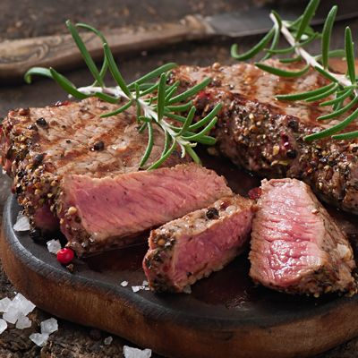
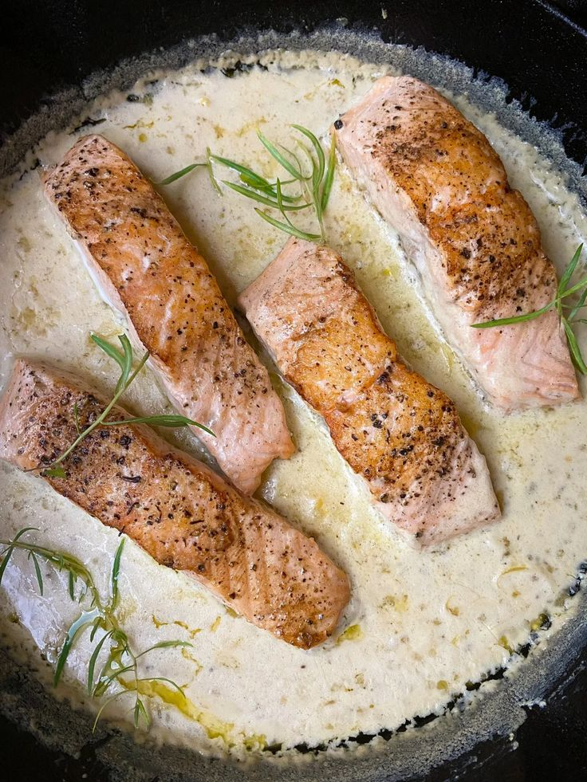
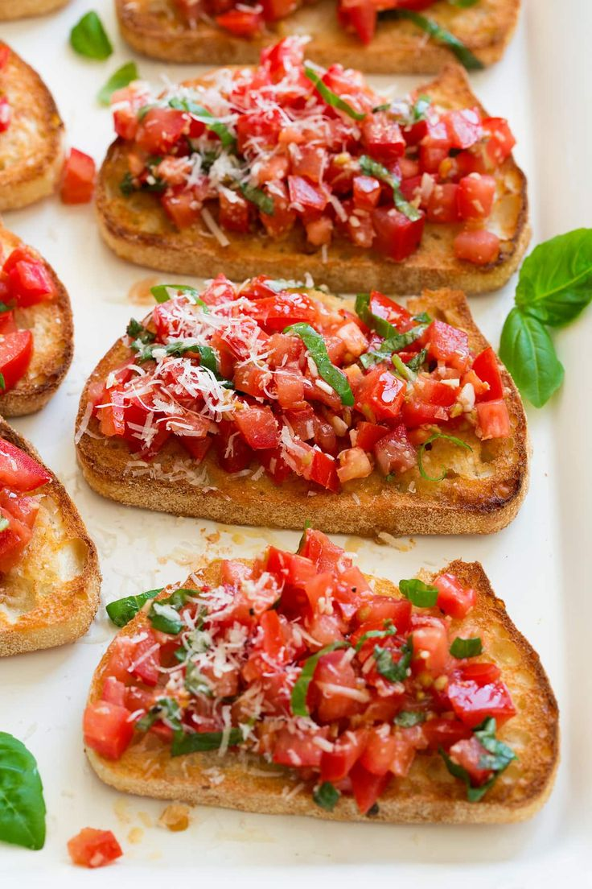
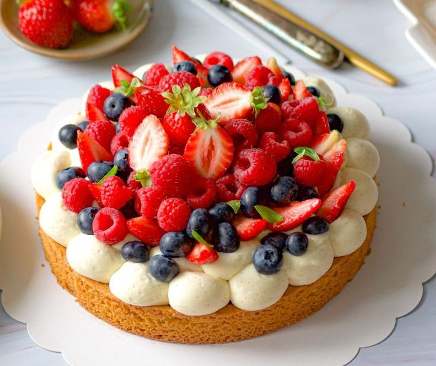

NOS PLATS PRINCIPAUX

Filet de boeuf grillé
2000 DA
Grillé est préparé avec un filet tendre de bœuf, assaisonné de sel, de poivre et d'herbes, accompagné d'une sauce au poivre et d'une sauce béarnaise, et servi avec des légumes grillés.

Pavé de saumon a la sauce
2500 DA
Plat constitué d'un morceau de saumon frais, cuit à la vapeur, assaisonné avec du sel, du poivre. servi avec une sauce à base de citron, accompagné de riz, de légumes et de pommes de terre.

Magret de canard
3500 DA
Plat à base de poitrine de canard, rôti. assaisonné avec du sel, du poivre et du miel ou des épices. Le magret est souvent servi avec une sauce aux fruits, accompagné de pommes de terre sautés.
NOS ENTREES

Brushetta
800 DA
Entrée simple composée de tranches de pain grillé frottées avec de l'ail, garnies de dés de tomates fraîches assaisonnées d'huile d'olive, de basilic frais, de sel et de poivre et de quelques legumes .

Soupe a l'ognion gratinée
600 DA
marie habilement des oignons finement tranchés, lentement caramélisés dans du beurre doré, avec un bouillon de bœuf riche en saveurs. Servie dans des bols individuels, chaque portion est couronnée d'une tranche de pain grillé et généreusement recouverte de fromage râpé .

Carpaccio de tomates
900 DA
Entrée légère et rafraîchissante composée de fines tranches de tomates fraîches, disposées sur une assiette et assaisonnées d'huile d'olive, de vinaigre balsamique, de sel, de poivre et de basilic frais.
NOS DESSERTS

Tarte aux fruits
1600 DA
Dessert composé d'une croûte de pâte garnie de fruits frais, souvent coupés en tranches, mélangés à une garniture sucrée comme la crème pâtissière. recouvertes de fruits additionnels et servies avec une crème fouettée .

Creme brulée
800 DA
Dessert classique composé d'une crème à la vanille onctueuse et parfumée, recouverte d'une fine couche de sucre caramélisé à la surface. Dessert délicieusement crémeux avec une texture croquante sur le dessus.

Mousse au chocolat
700 DA
Dessert délicieux et onctueux composé de chocolat fondu mélangé avec des jaunes d'œufs, puis incorporé à des blancs d'œufs battus en neige pour obtenir une texture légère et aérée.servie dans des coupes individuelles et garnie de copeaux de chocolat ou de crème fouettée .